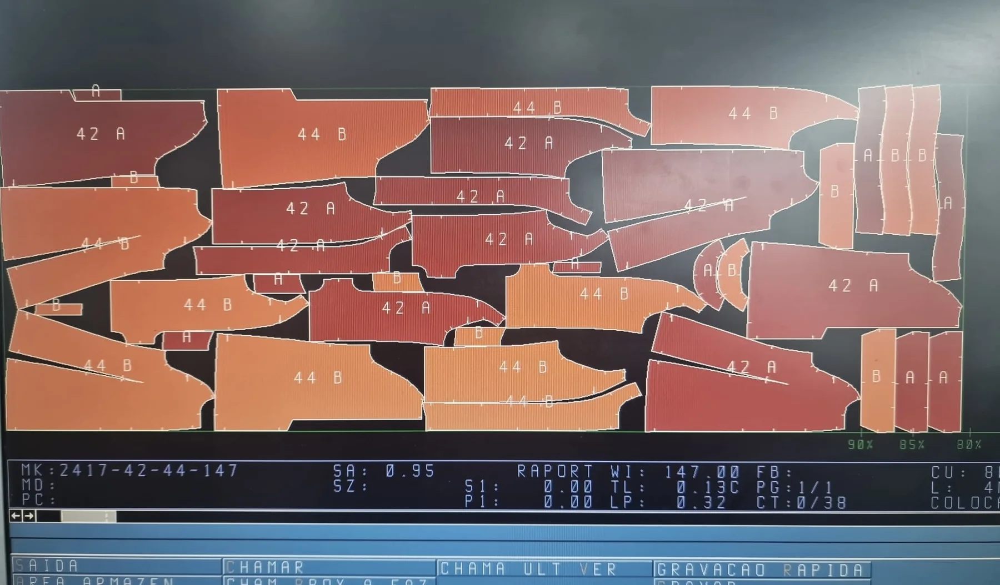
Design & Development
Technical development, modelling, prototypes and samples.
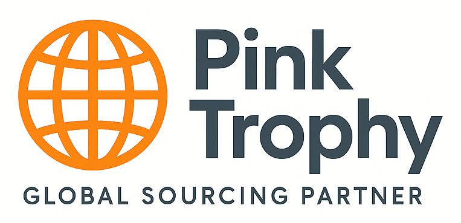
GLOBAL SOURCING · PORTUGAL + MOROCCO
Nearshore textile sourcing and production for European businesses — combining product development, flexible manufacturing, quality control and logistics through one point of contact.
OUR SERVICES →QUALITY FOCUSED
TAILORED SOLUTIONS
EUROPEAN NEARSHORE
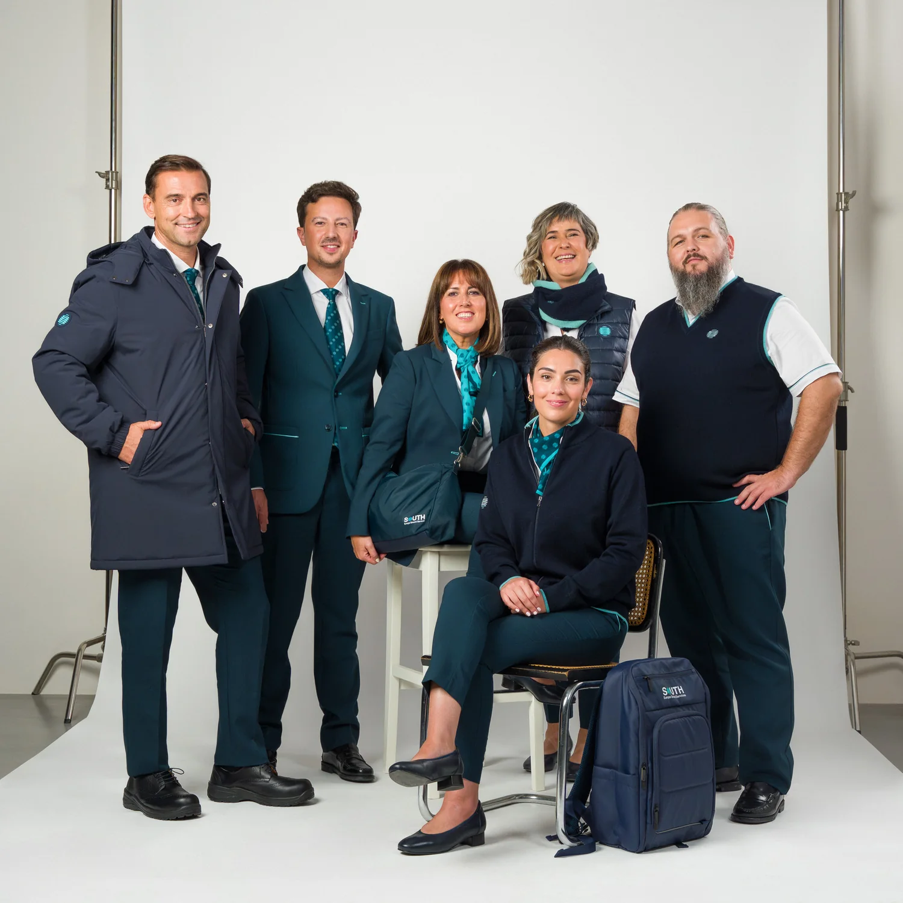
One sourcing partner from first brief to final delivery.
OUR SERVICES
From product development and sourcing to production, quality and logistics, we coordinate the complete journey.

Technical development, modelling, prototypes and samples.
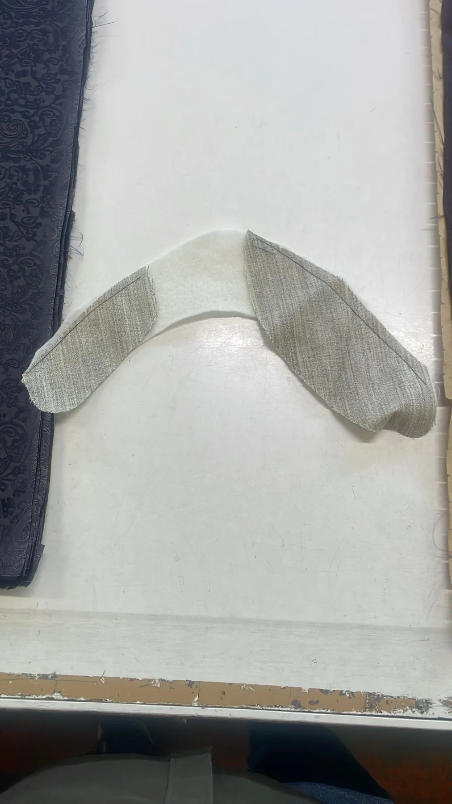
Fabrics, trims and components selected around each project's requirements.
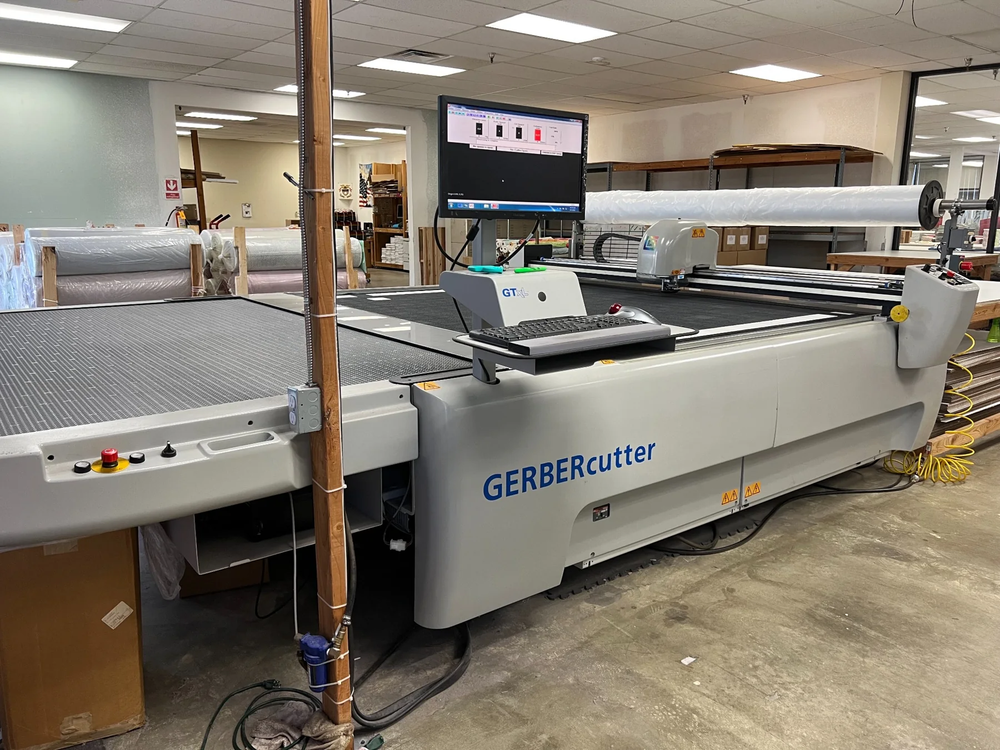
Flexible manufacturing coordinated through our production network.
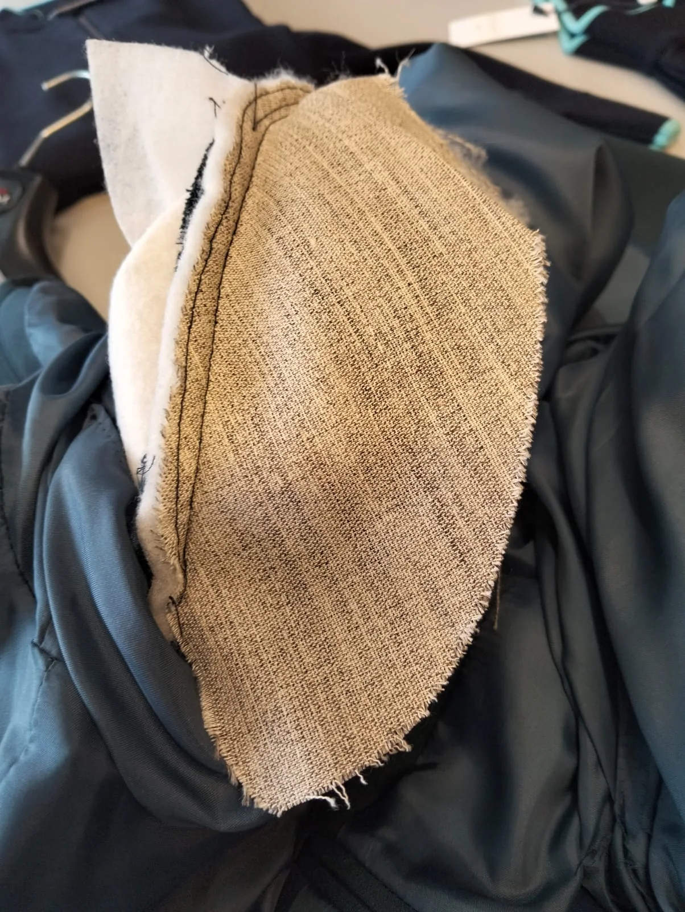
Close follow-up throughout production and before final delivery.
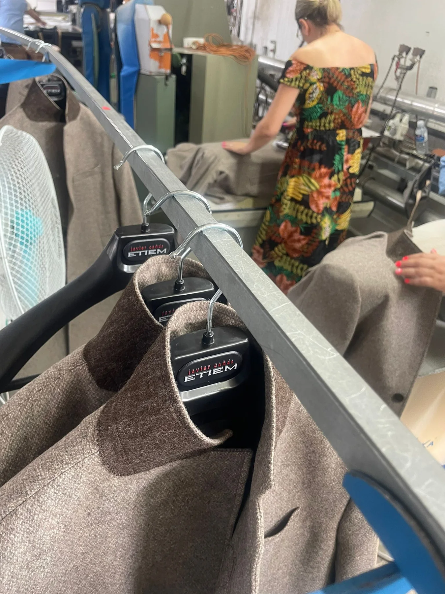
Packing, shipment preparation and logistics coordination through to delivery.
WHY PINKTROPHY
Our Portugal and Morocco production network provides European businesses with a flexible nearshore alternative — supported by close communication, quality follow-up and one point of contact.
SELECTED WORK
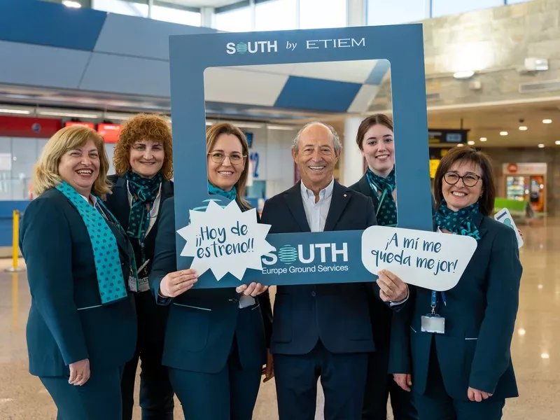
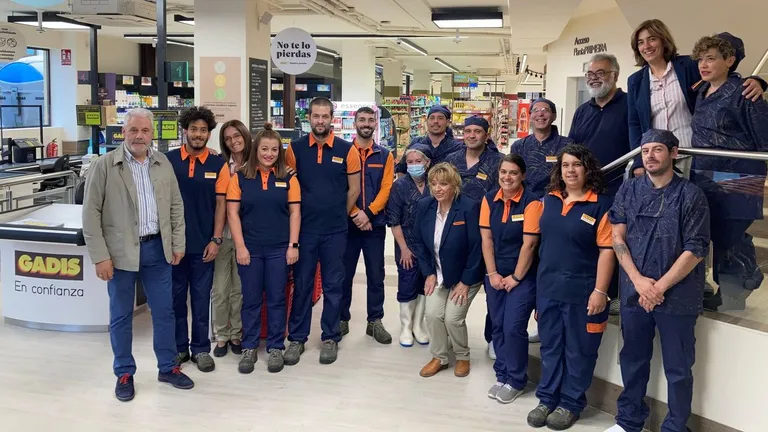
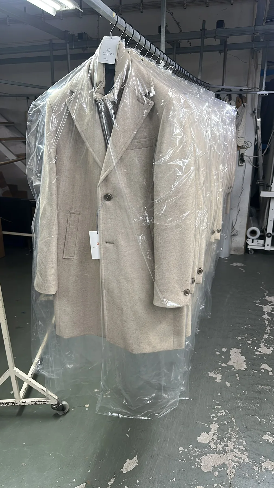
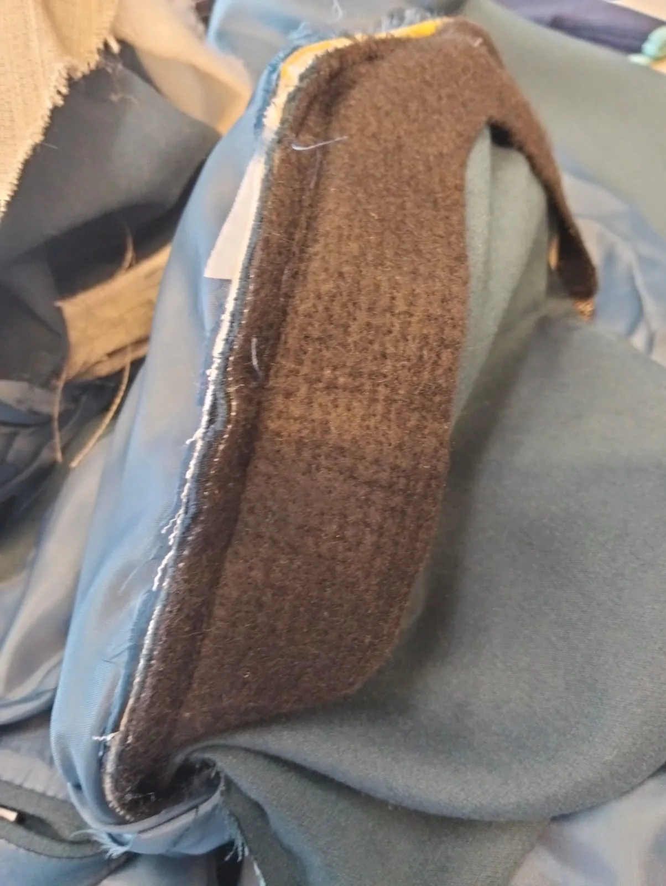
Selected images illustrate production and project experience within the sourcing and manufacturing network. Third-party trademarks remain the property of their respective owners.
ABOUT PINKTROPHY
PinkTrophy connects European businesses with an established production network in Portugal and Morocco. We coordinate textile projects from development through final delivery with transparency, flexibility and close communication.
TALK TO US →SECTORS WE SUPPORT
LET'S WORK TOGETHER
Tell us what you need. Let's explore how PinkTrophy can support your next sourcing and production project.
hello@pinktrophy.com →